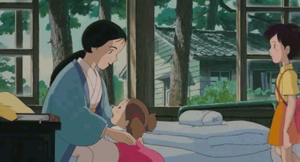

La maladie

Film: Mon voisin Totoro
Au delà d’avoir été un véritable sujet sociétal au milieu du XXe siècle, la maladie est un problème familial chez les Miyazaki.
En effet, la maman d’Hayao avait contracté la tuberculose et fût alitée pendant quelques années.
De cette expérience, Hayao en a tiré l’inspiration pour Mon Voisin Totoro. Le film conte l’histoire d’une famille Japonaise partie
s’installer à la campagne pour se rapprocher de la maison de repos de la mère de famille, atteinte de… la tuberculose, comme par hasard.
La légende dit qu’avant de devenir l’emblème du Studio Ghibli, ce gros nounours de Totoro était un shinigami, une sorte de représentation
de la mort personnifiée. Sa rencontre avec Satsuki et Mei, les deux filles de la famille, serait en vérité prémonitoire du décès de leur mère.
Mais le réalisateur n’est cependant pas du genre à se morfondre sur le destin pas facile-facile de ses proches, la preuve dans la
touche de philosophie qu’il apporte dans ses messages.
Le Vent Se Lève est la dernière création de l’artiste. L’histoire est celle d’un ingénieur en aéronautique qui tombe amoureux d’une
jeune fille. Celle-ci accepte de l’épouser, mais l’informe qu’elle souffre de la tuberculose, comme si on l’avait pas deviné. Sauf que ce film
conte l’histoire d’une vie pleine de poésie malgré un décor qui ne s’y prête pas.
Ainsi, le récit met en valeur non pas le côté irréversible du dénouement, mais bien la beauté éphémère de chaque moment.
Cette philosophie est d’ailleurs guidée au fil du long métrage par Paul Valery et son poème Le Cimetière Marin
"Le vent se lève, il faut tenter de vivre".